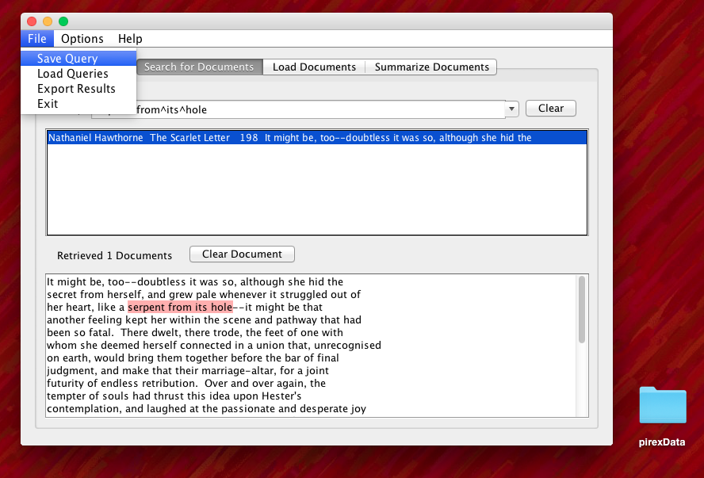
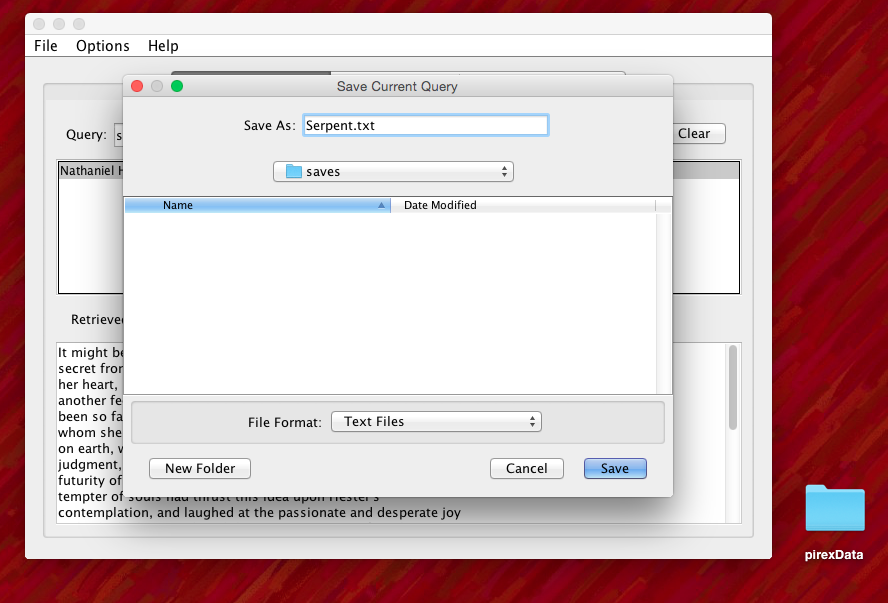
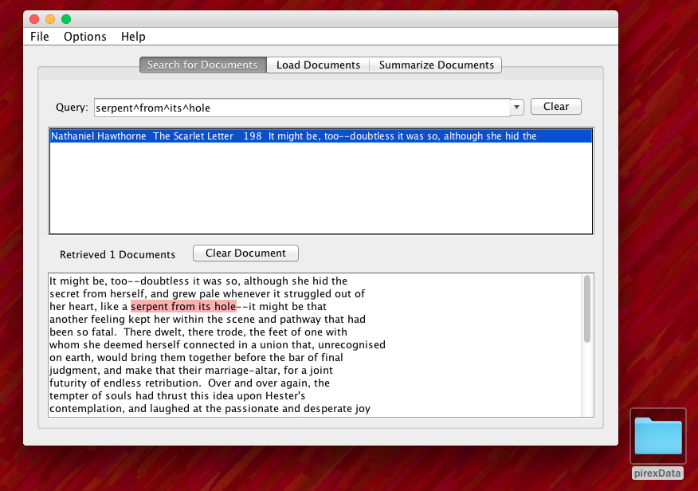
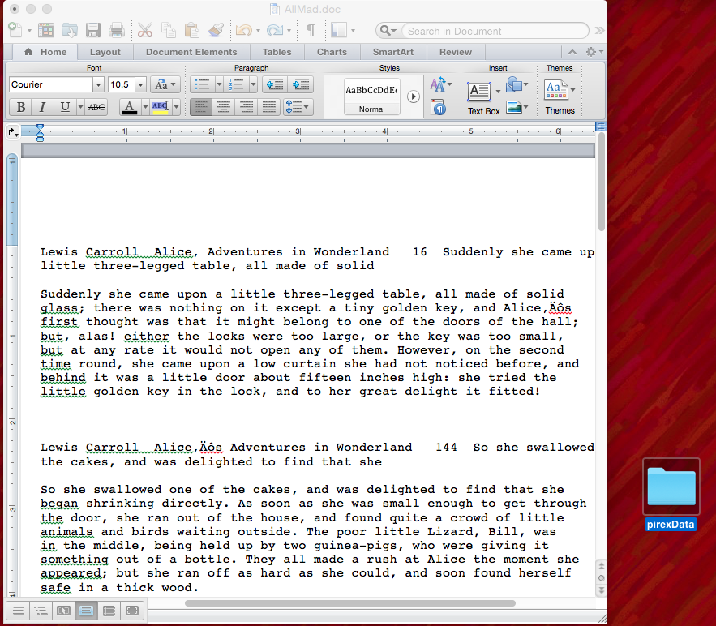

What is Pirex? Pirex allows users to input arbitrary plain-text documents. It indexes and stores input texts permanently in the file system so they can be searched later. It allows users to enter queries to retrieve paragraphs from stored texts matching the queries, and displays retrieved paragraphs to users. This video briefly goes over the basic functionality of Pirex. It will show you how to load documents, remove documents, and perform queries.
HELP
QUERIES
word
Basic Query
A single word or multiple words ex) english class
*
Wildcard Query
The first letter or letters of the word you want to search with a star on the end ex) shar*
~
Negation Query
A word you don't want to appear in your results preceeded by a ~ symbol ex) ~Bernstein
?
Variation Query
Swap out a character in a word for a question mark to get words with different letters in place of the question mark ex) c?te
^
Adjacency Query
Put the carrot symbol between terms in order to yield results where all the terms are found next to each other ex) there's^always^more^to^learn
?^*~
Combined Query
All of these symbols can be used in conjunction with one another in a single query ex) the^dog fi* s?me ~fun crab
SAVE QUERIES

Step 1 Enter the terms you would like to search for. You can use any combination of the symbols in order to refine your search and yield the specific results you are interested in finding. The purpose of this feature is so that if you were to write out a long and complicated query, you would be able to save it in a folder created by Pirex so that you could reload it later on.

Step 2 Go to File > Save Query Once you complete this action, Pirex will automatically create a folder on your Desktop named "pirexData" that will create another folder inside of itself called "saves" where it will save your query.

Step 3 Rename your query to be saved You can either choose to save your query to the folder that Pirex automatically generates, or you can save your queries to a different folder that you have created yourself. When you open up that folder you will fine a plain text file with the contents of your query saved.
LOAD QUERIES

Step 1 Go to File > Load Queries Direct to the folder in which you had previously saved your query, select the query you would like to load, and then press Open.

Step 2 View Results You will see the previous results that were rendered when you first entered the saved query. This enables you to save long searches and then load them back in so you don't have to remember or retype them.
EXPORT QUERY RESULTS

Step 2 Go to File > Export Results You will see the previous results that were rendered when you first entered the saved query. This enables you to save long searches and then load them back in so you don't have to remember or retype them.

Step 2 Automatically Saves Pirex will automatically save the results of your query to a folder inside of "pirexData" named "exports."

Step 2 View Results Once you navigate to the folder where your results were saved, you will find that a plain text file of the results has been saved and can be opened in any word processor.